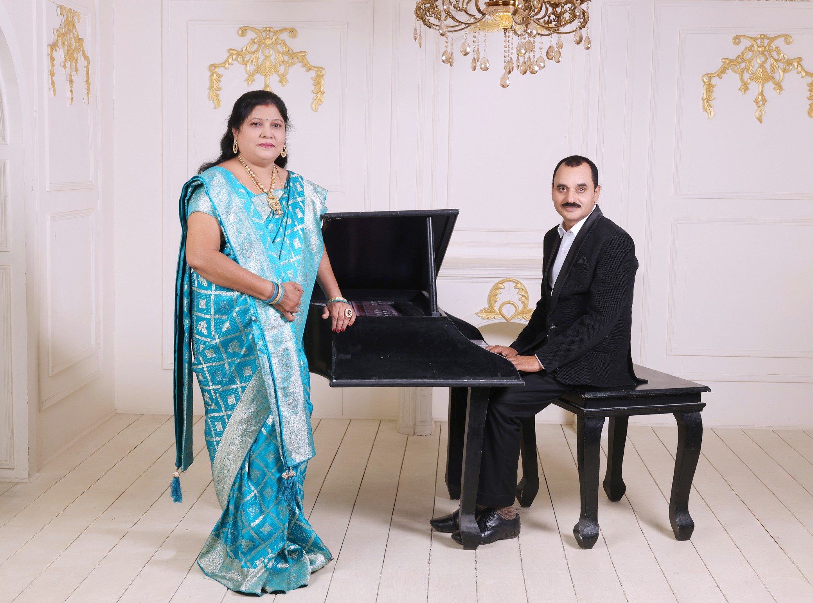
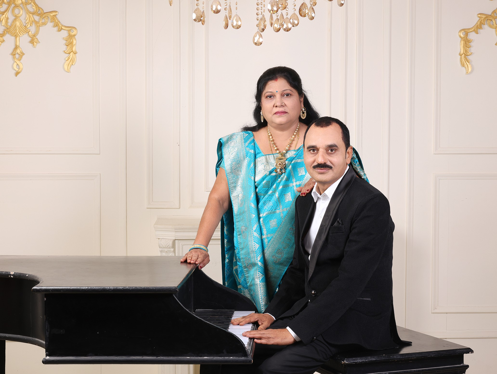

25 Years of Togetherness • Silver Jubilee Celebration
"दो दिलों की एक कहानी, जो समय के साथ और गहरी होती गई"

पच्चीस वर्ष पहले अरुण एवं नीलिमा शर्मा ने एक साथ जीवन की यात्रा शुरू की। हर पल, हर खुशी, हर चुनौती — सब कुछ साथ मिलकर पार किया। यह रजत जयंती उस अटूट प्रेम का उत्सव है।
Twenty-five years ago, Arun and Nilima Sharma embarked on life's most beautiful journey together. Through every season, every storm, every celebration — side by side, hand in hand.
"हर पल तुम्हारे साथ एक उपहार है।"
18 मई 2001 को डगनिया से बारात निकली, तखतपुर में सात फेरे हुए — गुरुनानक धर्मशाला में अरुण और नीलिमा ने जीवनभर साथ निभाने का वचन लिया।
5 जनवरी 2003 को परिवार में एक नन्ही जान आई — बेटे के आगमन से शर्मा परिवार की कहानी ने एक नया और सबसे सुंदर अध्याय शुरू किया।
28 अगस्त 2003 को नीलिमा जी शासकीय शिक्षिका के रूप में नियुक्त हुईं — वर्षों के धैर्य, परिश्रम और विश्वास का पहला बड़ा प्रतिफल।
दीनदयाल कॉलोनी में अपना पहला घर लिया — सीमित साधनों के बीच परिवार के लिए एक सुरक्षित छत, एक नई उम्मीद का प्रतीक।
पापा का NTPC में केंद्रीय सरकारी सेवा हेतु चयन हुआ — लम्बे संघर्षपूर्ण दौर के बाद यह उपलब्धि स्थिरता, सम्मान और नई संभावनाओं का उजाला लेकर आई।
वर्षों की मेहनत और धैर्य के बाद 2014 में अपना सुंदर घर बनाया — हर ईंट में संघर्ष था, हर दीवार में त्याग था, और हर कोने में सपनों की चमक।
बिना किसी ऋण के पहली कार खरीदी — वर्षों पुराना सपना साकार हुआ। यह केवल एक गाड़ी नहीं, मेहनत का प्रमाण थी।
दुनिया बदली, चुनौतियाँ आईं — पर शर्मा परिवार का प्यार और विश्वास हर मुश्किल से आगे निकला। कोविड के बाद भी परिवार एकजुट रहा।
24 मई 2026 को होटल डाउनटाउन, राजकिशोर नगर, बिलासपुर में भव्य उत्सव — पच्चीस वर्षों की इस अमर प्रेम कहानी का सांय 7:00 बजे से शुभारंभ।

साथ चलना ही मंज़िल है,
साथ जीना ही ज़िंदगी है।
तुम्हारा हाथ थामे हर राह
खूबसूरत लगती है।
Swipe or drag to explore
Blessings & Wishes — Sharma Family
आपका प्रेम अनंत काल तक ऐसे ही बना रहे।
— Your ChildrenMay every coming year be more beautiful than the last.
— Sharma Familyनीलिमा जी और अरुण जी, आपकी खुशियाँ हमारी खुशियाँ हैं।
— With LoveSilver Jubilee Anniversary Newspaper
अरुण एवं नीलिमा शर्मा की रजत जयंती का यह विशेष स्मरणीय संस्करण — 25 वर्षों की यादें, कहानियाँ और पल, एक अखबार में।
A commemorative newspaper edition celebrating 25 years of Arun & Nilima Sharma — memories, stories and milestones, all in one keepsake.
अखबार डाउनलोड करें Download Newspaper PDFPDF opens in browser — save or print to keep forever.
समारोह की सभी तस्वीरें Google Drive पर उपलब्ध होंगी। नीचे दिए लिंक से आप सभी फोटो देख और डाउनलोड कर सकते हैं।
All photos from the Silver Jubilee celebration will be available on Google Drive after the event. Click below to view and download your favorites.
Replace YOUR_GOOGLE_DRIVE_LINK_HERE in index.html with your actual shared Google Drive folder link.
गाँव की सादगी से संघर्ष की ऊँचाइयों तक
डगनिया गाँव में पले-बढ़े अरुण जी ने संघर्ष के बीच शिक्षा के प्रति समर्पण कभी नहीं छोड़ा। कोरबा कॉलेज से स्नातक, C.M.D. कॉलेज बिलासपुर से स्नातकोत्तर और IIM मुंबई से MBA — एक सच्ची प्रेरणादायक यात्रा। "शर्मा मैथ्स क्लासेस" के माध्यम से अनेक विद्यार्थियों का जीवन सँवारा।
संघर्ष, सादगी और धैर्य से सजी
तखतपुर में जन्मी नीलिमा जी ने J.D.C. कॉलेज बिलासपुर से स्नातक एवं स्नातकोत्तर शिक्षा पूर्ण की। छात्रावास में रहकर आत्मनिर्भरता सीखी। प्रतियोगी परीक्षाओं में सफलता के बाद शासकीय शिक्षिका बनीं — पदोन्नति का अवसर भी परिवार के लिए त्याग दिया।
A Mirror of Each Other
दोनों ही वामहस्त (Left Handed) हैं। सुंदर हस्तलेखन, आकर्षक Drawing, तेज़ समझ — ये गुण दोनों में समान। शिक्षा के प्रति गहरी निष्ठा और संघर्ष के बीच खड़े रहने की शक्ति — उनकी सबसे बड़ी समानता।
घर में ताँबे की एक बेहद सुंदर चाय वाली गंज़ी थी जो वर्षों तक रसोई की शान रही। एक पारिवारिक बहस के दौरान वह ऐतिहासिक रूप से ज़मीन पर पहुँचा दी गई — निचला हिस्सा स्थायी रूप से टेढ़ा हो गया। पर गंज़ी ने हार नहीं मानी और आज भी पूरी निष्ठा से चाय बनाती है। परिवार कहता है — "इसका डिज़ाइन समय ने नहीं... एक बहस ने बदला था।"
2016 की एक गर्मियों की रात, समारोह से लौटने के बाद मुख्य दरवाज़े की इंटरलॉक चाबी ने काम करना बंद कर दिया। रातभर अनेक प्रयास हुए — चाबी घुमाई गई, दरवाज़ा समझाया गया। अगले दिन पीछे का लॉक तोड़कर घर में प्रवेश हुआ। निष्कर्ष: कभी-कभी अपने ही घर में घुसने के लिए भी विशेष रणनीति बनानी पड़ती है।
घर पर कोचिंग क्लासेस चलती थीं। एक दिन एक नए छात्र का आगमन हुआ। क्लास तक पहुँचने के बजाय वह सीधे उस कमरे में चला गया जहाँ माँ और बेटा आराम से सो रहे थे। आश्चर्यजनक रूप से छात्र बिल्कुल नहीं घबराया — बड़े आराम से बिस्तर के पास बैठ गया, कॉपी-पेन निकाला और क्लास शुरू होने का इंतज़ार करने लगा। वह आज भी "घर के सबसे कॉन्फिडेंट स्टूडेंट" के रूप में याद किया जाता है।
जब भी अत्यधिक थकान होती, समय कम होता, या रसोई में मेहनत का मन नहीं होता — तुरंत "आलू-टमाटर और चावल" योजना लागू हो जाती। यह व्यंजन परिवार का आधिकारिक "Emergency Food System" बन गया। हर बार वही साधारण आलू-टमाटर उतने ही स्वाद से खाया गया मानो कोई दावत चल रही हो।
जब भी माँ कोई नया व्यंजन बनाकर पापा से राय पूछती थीं, उनका उत्तर अक्सर बहुत शांत और रहस्यमयी होता था — "उस दिन ज़्यादा अच्छा बना था।" माँ हँसते हुए पूछतीं — "कौन-सा दिन?" मज़ेदार बात यह है कि वह "उस दिन" आज तक कभी स्पष्ट नहीं हो पाया। यह छोटी-सी बातचीत वर्षों तक घर की सबसे प्रसिद्ध Food Review परंपरा बनी रही।
जब भी पिता जी मशरूम — अर्थात् "कुकुरमुत्ता" — लेकर आते थे, पकाने की पूरी ज़िम्मेदारी स्वतः उन्हीं पर आ जाती। माँ को मशरूम की बनावट से विशेष दूरी बनी रहती थी — ब्राह्मण परिवार की पारंपरिक सोच में यह लगभग "अर्ध-नॉनवेज" श्रेणी का खाद्य पदार्थ लगता था। पिता जी पूरे उत्साह से मशरूम बनाते रहे और परिवार वर्षों तक इस "कुकुरमुत्ता विवाद" पर हँसता रहा।
"यह 25 वर्षों की यात्रा केवल भौगोलिक भ्रमण नहीं रही, बल्कि यह आस्था, प्रेम और भारतीय संस्कृति के विविध रंगों से सजी एक जीवंत कहानी बन गई।"
विवाह की 25वीं वर्षगांठ — भव्य समारोह
स्नेह, सम्मान और अपार खुशियों के साथ हम आपको सादर आमंत्रित करते हैं — हमारे जीवन के इस विशेष अवसर पर।